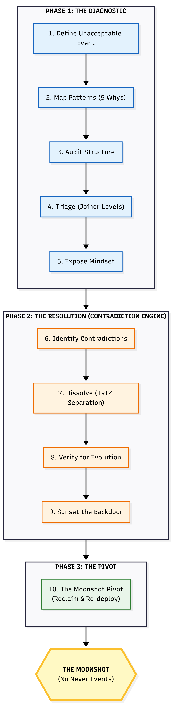
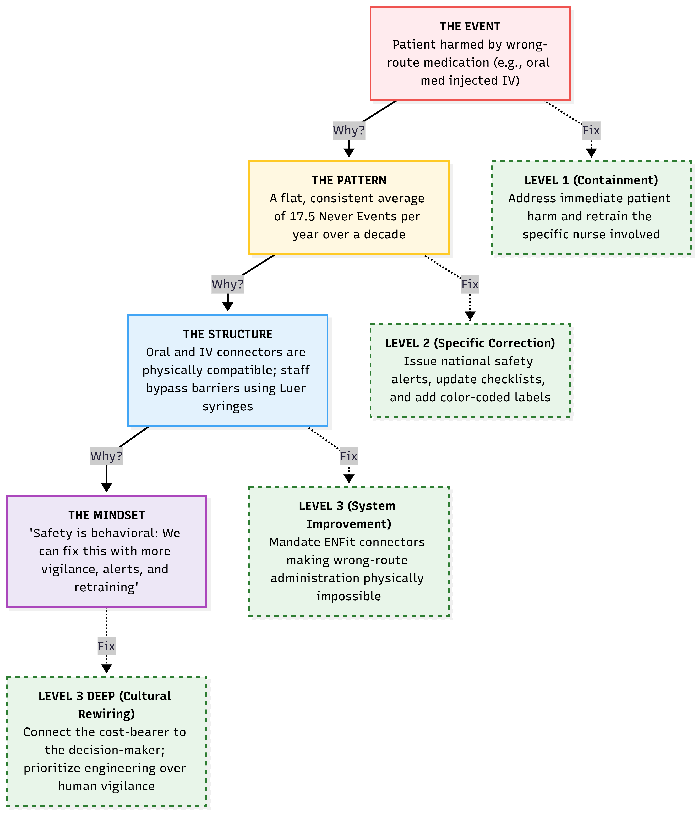
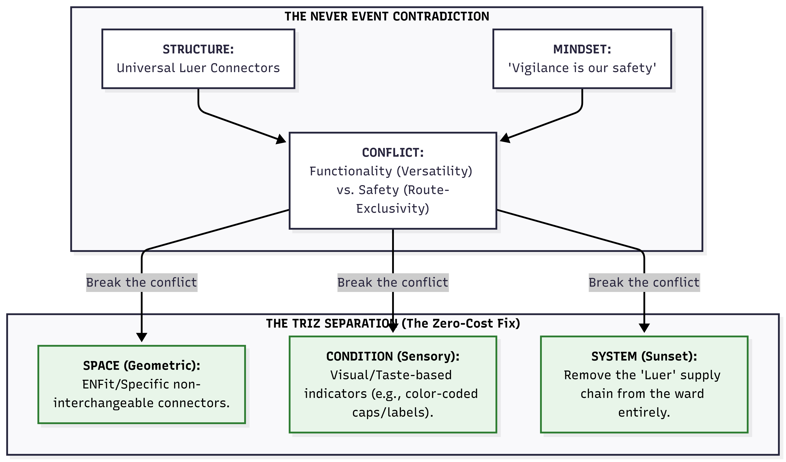
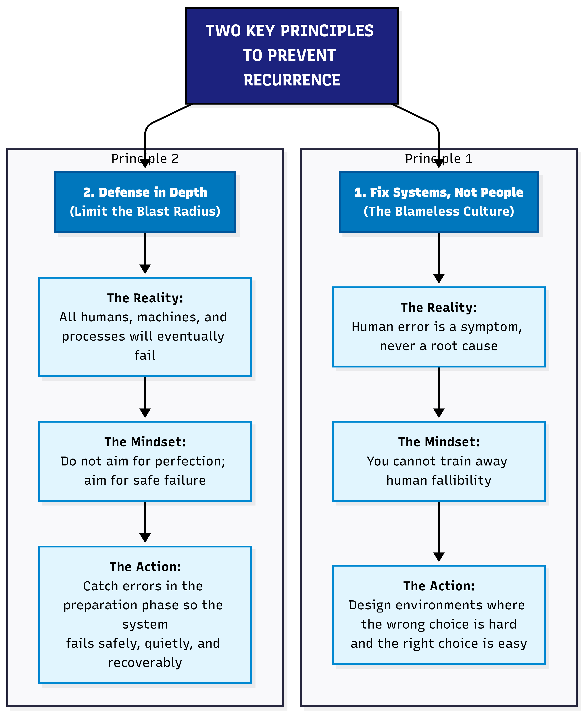
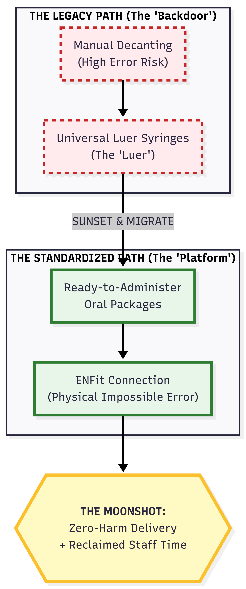

Root Cause Analysis Diagram
The fishbone (Ishikawa) diagram is the most widely used root cause analysis diagram in healthcare QI. It organises potential causes into categories, making the invisible visible. This page shows three diagram types, how to use each, and two NHS worked examples — including what a completed diagram looks like and how to move from causes to actions.
- Draw a fishbone (Ishikawa) diagram for any healthcare QI problem.
- Choose between fishbone, 5 Whys, and fault tree diagrams — and know when each works best.
- Build a cause map that reaches system causes, not just “human error.”
- Move from the diagram to action — and verify with data whether the fix worked.
☰ Contents
- The fishbone (Ishikawa) diagram
- Blank fishbone template
- NHS example 1 — wrong-route medication error
- NHS example 2 — delayed discharge
- The 5 Whys diagram
- Fault tree diagram
- Which diagram to use when
- Moving from diagram to system cause
- From cause map to structural fix
- Worked example — Never Events
- The Iceberg Why questions — cheat sheet
- Verifying with data
The fishbone (Ishikawa) diagram
The fishbone diagram — also called the Ishikawa diagram or cause-and-effect diagram — was developed by Kaoru Ishikawa at Kawasaki in the 1960s. It maps potential causes of a problem into structured categories, revealing the range of factors that could be contributing. The diagram looks like a fish skeleton: the problem (effect) is the head; the bones are categories of causes; the sub-bones are specific causes within each category.
In healthcare QI the standard six categories are People, Process, Equipment, Environment, Materials, and Management (sometimes called 6Ms: Man, Method, Machine, Milieu, Material, Measurement). The categories are starting points, not constraints — adapt them to your specific problem.
Blank fishbone template
Each bone = a category of causes. Sub-branches (dashed) = specific causes within that category. The problem (effect) goes in the head box on the right.
- Write the problem clearly in the head box — be specific. “Delayed discharge” is better than “flow problems.” “Wrong-route medication administered to patient X on ward Y” is better than “medication error.”
- Brainstorm causes in each category — write on the sub-branches. Include everything that might be contributing, not just the obvious ones.
- Ask “why?” at least twice for each cause — the first answer is usually a symptom. The second or third answer starts to reach the system.
- Circle the root causes — the causes that, if addressed, would prevent recurrence. These are usually in Management, Environment, or Process — not in People.
- Verify with data — the diagram generates hypotheses. Bootstrap CUSUM on the outcome metric after the fix confirms whether a hypothesis was correct.
NHS example 1 — wrong-route medication error (never event)
The root causes (RC) are in Management — incomplete NRFit rollout and absence of a mandatory double-check policy. People and Environment contributed but are not root causes: addressing them alone would not prevent recurrence.
The most common mistake in RCA is stopping at the person. “Locum unfamiliar with ward” describes a contributing factor but not the root cause. The root cause question is: what system feature allowed a locum unfamiliar with the ward to administer medication via the wrong route without any check catching it?
The answer is in Management: NRFit connectors — which make wrong-route administration physically impossible — had not been fully rolled out, and no mandatory independent double-check policy existed. Address the system, and it doesn’t matter whether the nurse is familiar with the ward or not.
See Never Events: Wrong-Route Medication for the full Bootstrap CUSUM analysis of whether NHS Never Event programmes have produced structural change.
NHS example 2 — delayed discharge
Two constraint types visible: internal (Process, Management) and external (System boundary — social care). Addressing only internal causes will improve flow but not eliminate the external constraint. See Gloucestershire Bright Spot for how both were addressed simultaneously.
The 5 Whys diagram
The 5 Whys is a linear cause chain: you ask “why?” repeatedly until you reach the root cause. It is simpler than the fishbone and works well for straightforward single-cause problems. It works less well for complex multi-cause problems where several independent chains lead to the same outcome — a fishbone handles these better.
The 5 Whys traces one causal chain. The root cause is a management system failure (no executive accountable), not a human error.
Fault tree diagram
The fault tree diagram works top-down: starting from the failure event, it maps the combinations of conditions that could produce it using AND/OR logic gates. It is most useful for safety-critical systems where you need to identify all possible pathways to a failure, not just the most likely one. In healthcare, it is used in FMEA (Failure Mode and Effects Analysis) and safety case development.
For most QI improvement work, the fishbone or 5 Whys is more practical. Use fault tree analysis when you need to be exhaustive about failure pathways rather than when you need to identify the single most important cause.
Which diagram to use when
| Situation | Best diagram | Why |
|---|---|---|
| Complex problem with multiple possible causes (most QI problems) | Fishbone | Organises brainstorming across categories; prevents fixating on one cause |
| Single clear cause chain to trace | 5 Whys | Faster; drives deeper on one chain; good for simpler problems or initial scoping |
| Safety-critical system; need to be exhaustive | Fault tree | Maps all failure pathways; AND/OR logic; used in FMEA |
| Want to show causal loops and feedback (systemic problems) | Causal Loop Diagram | Shows reinforcing loops; better for recurring system problems. See Causal Loop Diagrams |
| Contradictions keeping the problem in place | Evaporating Cloud | Reveals the assumption sustaining the conflict. See Evaporating Cloud |
Moving from diagram to system cause
The most important rule in any RCA diagram: keep asking why until you reach a system cause, not a person cause. Most diagrams stop too early — at the action of an individual rather than at the system feature that allowed or produced that action.
A system cause is one that:
- Would produce the same outcome with a different person in the same situation
- Can be changed by a management or design decision rather than by training or supervision
- Is in the Management, Process, or Equipment categories — not in People
People causes (tiredness, distraction, unfamiliarity) describe human vulnerability to a system design failure. They are real contributing factors. They are not root causes — because addressing them without changing the system means the next person in the same situation faces the same risk.
From cause map to structural fix — the Moonshot Process
Drawing the fishbone diagram is Step 2 of improvement — seeing the structure. But most QI programmes stop there: the diagram is produced, the causes are listed, an action plan is written, the same event recurs. The reason is that RCA rarely reaches the structural assumption that is keeping the problem in place.
The Moonshot Process takes the fishbone forward into structural change. The name matters: calling it “Super RCA” makes people hear audit, blame, and paperwork. Calling it the Moonshot Process makes people hear future, growth, and strategy. The process is identical — the framing shifts the psychological weight from looking backward to moving forward.
It uses the same language QI practitioners already know — 5 Whys, Joiner levels, common and special cause variation — and adds one step most improvement processes miss: explicitly identifying and dissolving the contradiction that makes the structural fix seem impossible.
Not every event requires a full structural investigation. Deming warned that confusing common and special cause is itself the root cause of most failed management. The rule of three provides a practical trigger:
- First occurrence: Observe and log. Apply a Level 1 containment fix. Do not launch a full RCA — this may be special cause variation (a one-off).
- Second occurrence: Preliminary audit — run 5 Whys steps 1–2 only. Check whether the two events share the same structural trigger.
- Third occurrence: Common cause confirmed. The system is producing the event. Launch the full process below.
Why three? A special cause happens once. When it happens three times, it is no longer an accident — it is a feature of the system design. You now have enough data to show management that this is a structural failure, not bad luck.
The three-phase process

Phase 1 finds the structural cause. Phase 2 dissolves the contradiction keeping it in place. Phase 3 reclaims the capacity that was being consumed by the problem and redirects it toward the improvement goal.
| Phase | Step | What you do | QI tool |
|---|---|---|---|
| Phase 1 The Diagnostic |
1 | Define the unacceptable event in one data-backed sentence (e.g. “17.5 wrong-route medication errors per year for a decade”) | Bootstrap CUSUM to confirm the rate is stable — common cause, not improving |
| 2 | Map patterns — list recurring symptoms, run 5 Whys to find the immediate mechanical trigger | 5 Whys, fishbone diagram | |
| 3 | Audit the structure — look past the trigger to the rules, workflows, and physical environments that allow it to happen | Process mapping, Going to the Gemba | |
| 4 | Triage by Joiner level — classify all potential fixes. Levels 1–2 are containment. Levels 3–4 are structural design. The higher the level, the more effective — and the more politically difficult. | Joiner levels of fix | |
| 5 | Expose the hidden belief — identify the assumption that justifies the current structure (e.g. “safety is achieved through nurse vigilance”) | Pre-mortem, constraint interview | |
| Phase 2 The Resolution |
6 | Identify the contradiction — express the trade-off that makes the structural fix seem impossible | Evaporating Cloud |
| 7 | Dissolve via TRIZ separation — do not compromise. Redesign the system to separate the conflicting goals in space, time, condition, or system level | TRIZ separation principles | |
| 8 | Verify for evolution — ensure the solution allows future improvement. If it locks the system down so much that improvement becomes impossible, iterate. | PDSA cycle | |
| 9 | Sunset the backdoor — identify the old dangerous path and explicitly migrate away from it. The sunset is not a wall; it is a bridge to a safer architecture. | Change management, policy | |
| Phase 3 The Pivot |
10 | Reclaim and redeploy — the capacity that was being consumed by the recurring problem is now available. Redirect it toward the improvement goal. | Bootstrap CUSUM pre-committed prediction to confirm the change point |
Worked example — wrong-route medication Never Events
17.5 wrong-route medication errors per year for a decade. Classified as “wholly preventable.” Yet they kept recurring. The reason: the process stopped at the human (the nurse who made the error) rather than the system (the connector design that made the error possible). Here is what the full structural RCA looks like:

The left chain shows what the 5 Whys reveals. The right chain shows the Joiner level of fix appropriate at each level. The structural fix (Level 3: ENFit connector mandate) makes the error physically impossible — without relying on human vigilance.
The most common RCA failure is stopping at the person. Retraining addresses a Level 1 symptom. The structural question is: what system feature allowed a trained nurse to make this error without any physical barrier preventing it?
The answer is in the equipment design: oral medication syringes (Luer connectors) were physically compatible with IV lines. The connector design made the error possible. No amount of retraining changes the physics. The Level 3 fix — ENFit non-interchangeable connectors — makes wrong-route administration physically impossible. The fix is in the design, not the person.
The test: “If I am still relying on human willpower or vigilance to avoid the error, have I actually solved it?” If the answer is yes, you are still in the danger zone. Iterate on the design.
The “5” in 5 Whys is a rule of thumb, not a formula. The real question is: have you reached the Mindset level? Here are the questions to ask at each level of the Iceberg.
Why 1 — Questions to uncover the Pattern
You are proving to leadership that this is not an isolated accident. You are looking for history, frequency, and correlation.
- “Have we seen this exact failure, or a near-miss, in the last six months?”
- “What conditions are always present when this happens? Does it only happen on the night shift? Only during a software release?”
- “We tried to fix this last year — why did that previous fix fail to stop it this time?”
Whys 2 and 3 — Questions to uncover the Structure
You are looking for the physical, digital, and procedural rules that made the error possible. You are actively taking the blame off the human.
- “What physical or digital mechanism allowed the user to make this mistake? Why does the system allow this without a second check?”
- “Was the correct tool or information immediately available? If not, why?”
- “How does our current workflow make doing the wrong thing easier or faster than doing the right thing?”
- “If there is a rule or checklist in place, why is it structurally easier to bypass it than to follow it?”
Whys 4 and 5 — Questions to uncover the Mindset
The hardest level to reach because people are afraid to talk about it. You know you have reached it when answers shift from tools and processes to incentives, budgets, and fears.
- “Why do we accept this broken process as ‘just the way things are’?”
- “What behaviour does leadership actually reward? Do we reward the nurse who is fast, or the one who is safe?”
- “What would realistically happen to an employee who stopped the line to fix this?”
- “Why hasn’t the budget or time been allocated to permanently fix this structure?”
Applied to the Never Events example:
- Why 1 (Pattern): Nurses on this ward frequently use Luer syringes as workarounds
- Why 2 (Structure): Pharmacy frequently sends oral medications in incompatible syringes
- Why 3 (Structure): Pharmacy software doesn’t force selection of a safety syringe by medication route
- Why 4 (Mindset): IT and Procurement haven’t prioritised upgrading the pharmacy software
- Why 5 (Mindset): Leadership views safety upgrades as a sunk cost and prioritises revenue-generating equipment over operational safety
Identifying and dissolving the contradiction

Structure: universal Luer connectors. Mindset: “vigilance is our safety.” Conflict: versatility vs route-exclusivity. Three TRIZ separations dissolve it without compromise.
Two key principles to prevent recurrence

Principle 1: Human error is a symptom, never a root cause. Design environments where the wrong choice is hard and the right choice is easy. Principle 2: All humans and processes will eventually fail — aim for safe failure, not perfect prevention.
The sunset and migration — what it looks like in practice

The sunset is not a wall — it is a bridge. The old dangerous path is explicitly replaced with a superior safe path. The capacity previously spent managing the risk is reclaimed and redeployed.
The three-phase process produces a structural change. Bootstrap CUSUM applied to the outcome metric — wrong-route medication events per month — confirms whether the change point appeared after the ENFit rollout, and whether it is sustained.
The pre-committed prediction: “Wrong-route medication events will fall to zero within 12 months of full ENFit connector rollout across all wards.” If the Bootstrap CUSUM flat line persists after rollout, either the rollout is incomplete, or the connector was not the binding constraint. Both are valuable learning.
See Never Events: Wrong-Route Medication for the Bootstrap CUSUM analysis of NHS Never Event data.
Verifying with data — closing the loop
The fishbone diagram generates hypotheses about what caused the problem. It does not prove which cause was the binding one. Only data can do that.
After implementing the fix, Bootstrap CUSUM applied to the outcome metric confirms whether a structural change point occurred. If the fix addressed the right root cause, the metric changes. If it was a flat line, either the wrong cause was identified, the fix was insufficient, or the data period is too short.
This is the Step 4 of the five-step improvement framework: test honestly. The diagram is Step 2 (see the structure) and Step 3 (challenge the assumption). Bootstrap CUSUM closes the loop.